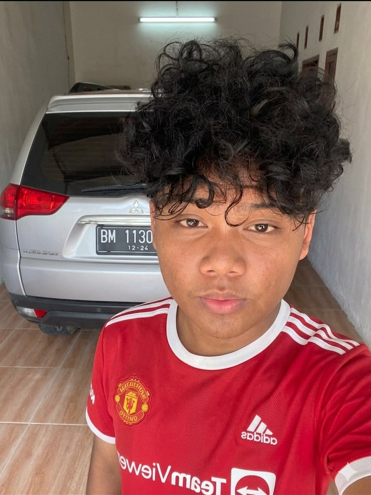
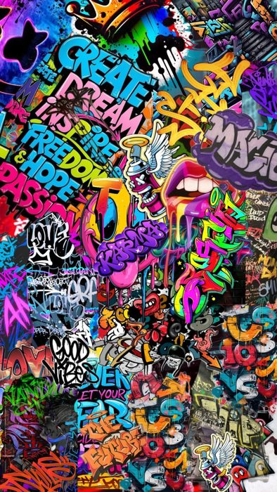
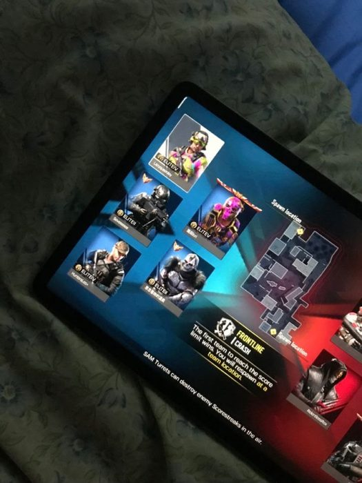
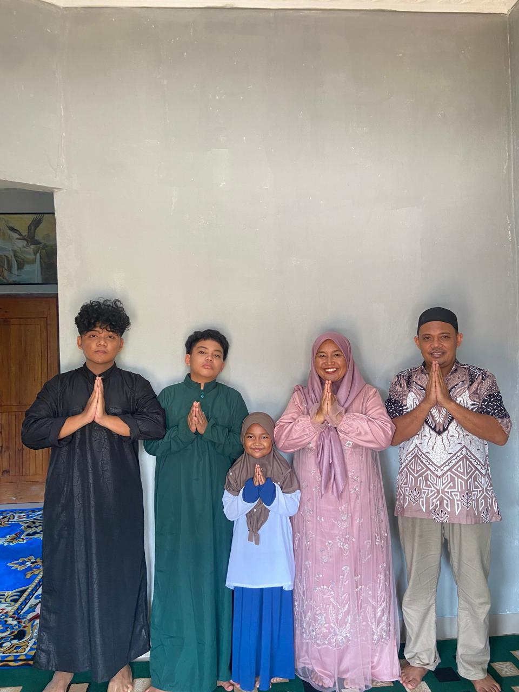

Portfolio Yoga Pangestu
SELECT KARTU UNTUK MELIHAT LEBIH LANJUT
TENTANG SAYA
PROFIL
Kenali saya
BELAJAR DESAIN
UX
UI/UX DESIGN
Ide menjadi visual
PLAYGAME
ON✦
GAME
Game & eksplorasi
PERSAUDARAAN SETIA HATI TERATE
 PSHT拳
PENCAK SILAT
Latihan & perjalanan
HOMEBASE
MYHOME
Mulai dari sini
PSHT拳
PENCAK SILAT
Latihan & perjalanan
HOMEBASE
MYHOME
Mulai dari sini

YP
UIUX

GAMEON✦
PSHT拳

GESER / SENTUH KARTU